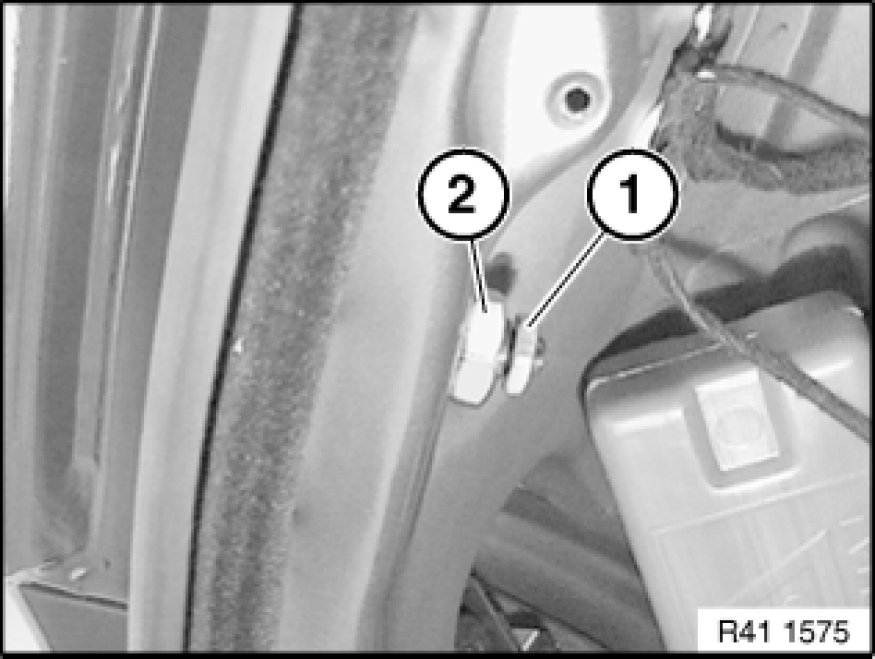
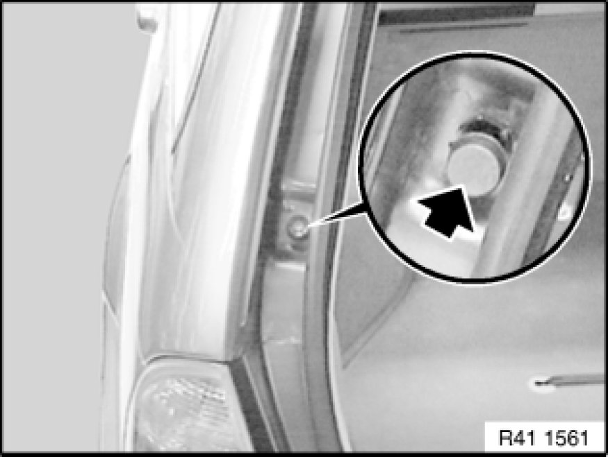
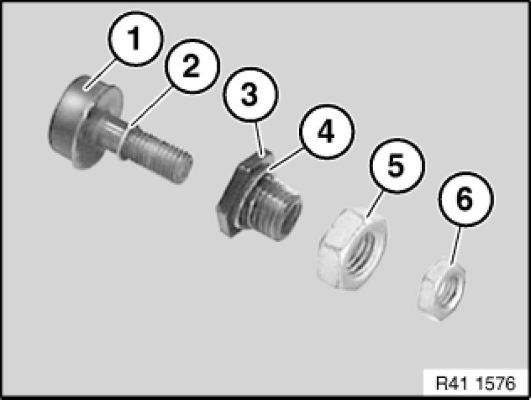

Trunk / Liftgate Stop: Service and Repair
51 24 165 - Removing and installing/replacing side left or right buffer stops on rear lid

Necessary preliminary tasks:
- Remove panel for roof pillar at rear (D-pillar) Pillar Trim
Note:
The operation is described on the left side; proceed in the same way for the right side.
Adjustment, refer to:
Last 3 work steps.

Release lock nut (1) on buffer stop.
Note:
Grip guide in water gutter.
Release nut (2) on buffer stop guide.
Installation:
(1) - Tightening torque 41 62 4AZ [1][2]Specifications.
(2) - Tightening torque 41 62 3AZ [1][2]Specifications.

Remove buffer stops outwards.

Installation:
Following parts of buffer stops must not be missing or damaged:
1 - Adjustable buffer stop
2 - O-ring
3 - Guide
4 - Guide O-ring
5 - Guide nut
6 - Lock nut
Important!
Both O-rings must be fitted (water ingress).
Adjusting buffer stops:
If necessary, release lock nut (1) on buffer stop.
Note:
Nut (2) on guide remains tightened down.
Use Allen key to bring adjustable buffer stop into contact with rear lid and then pretension by 1 turn.
Unscrew buffer stop until closed rear lid rests on buffer stops on left/right sides.
Important!
The rear lid must not be higher than the side panels, otherwise there is preload on height adjustment!

Note:
If the pretension results in poor rear lid closing comfort, the pretension can be turned back to 0.5 turns.
Important!
Rear lid must not generate any noises while engine is idling (pay particular attention to this in diesel models).